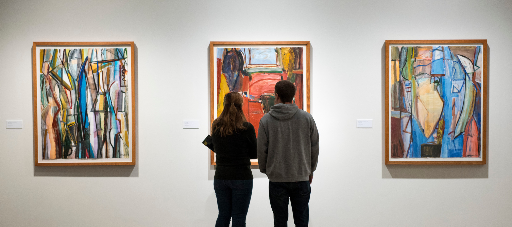

Motivation and Background
Art museums are undoubtedly a great way to learn about and experience art, have a team of professional curators curate an experience for you, and perhaps even see the world in new ways. However, art and art museums in particular can feel intimidatingly inaccessible for the general public. For regular people, who aren’t academics or involved in the “art world,” art can feel elusive, out-of-touch, or even perhaps just confusing. In fact, the homogeneity of the art world is a well-documented and studied problem, where “among those who frequented art museums, a stunning 92 percent identified as white, and only 16 percent identified as a minority.” 1 There’s a clear need to bring art back to the people.

Proposal
My proposal would look at new ways to interact with art by allowing users to share experience and information about how different pieces impact them, and why. The user could use their phone to take a picture of a piece of art (or simply type in the name), and have that piece of art’s “profile” pulled up on their mobile device. They could then read comments from other users, make their own comment about their opinions, and save the piece (like a bookmark), or share it on social media. The piece of art’s “profile” could then also offer suggestions for related artists and give more background on the artist or the inspiration for the piece.
This moves art from a conversation between the curator and the museum-goer, to a conversation between “regular people.” It allows users to learn about art through the experiences of other people, and I think that’s valuable to an understanding of what art is. We don’t want our museums to feel “stuffy” and pretentious; that’s how we end up with a homogenous museum-going base. It also allows users to feel connected to art, by allowing them to define their individuality in finding specific pieces more impactful, saving those pieces, and being able to go back and look at their collection later. The app could also offer suggestions based on what the user’s preferences have been, and thus allow the user to explore new art even after they’ve left the museum.
I’ve also felt like museums don’t offer quite enough information. The placards and artists bios are great and very helpful, but most pieces themselves only have a small placard listing the author, date, and perhaps who it was donated by. I think many people would “understand” art better through learning about the artist’s motivations and intentions.
Sources
1: “Does the art world have a demographics problem?”: Big Think